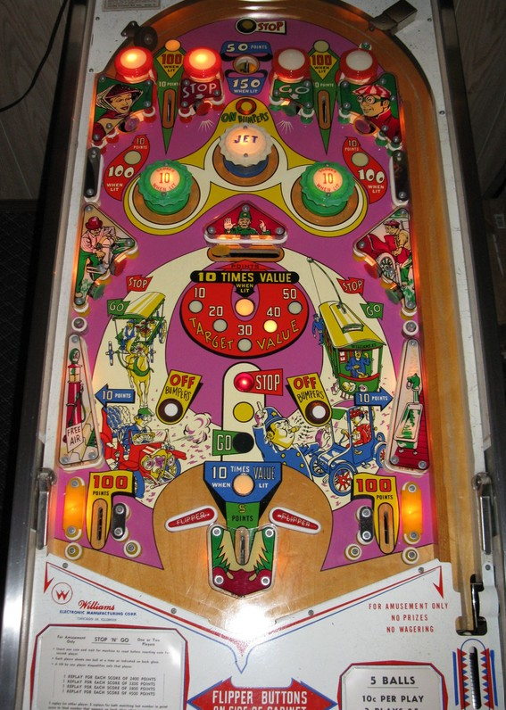

Stop 'N' Go and Red 'N' Go are two names for the same game, with the latter being more common Europe than in other regions of the world.
Almost all features on Stop 'N' Go depend on whether the game is in the Stop or Go state. To start each ball, the game will be in Stop state while a ball is in the shooter lane, and switch to Go when that ball enters the playfield. You can reenter Stop state by hitting the top rollover button or the red standup targets on the middle left and middle right. You'll switch back to Go state if you hit the center swinging target or one of the green standup targets on the left and right.
In the Go state:
In the Stop state:
The white bumper labelled Jet always scores 1 point. Green pop bumpers score 1 point or 10 when lit; they are lit with the On Bumpers button directly above the Jet, and they are turned off with the rollover buttons near the flippers.
Stop 'N' Go's flippers face outward. The ball cannot drain between the flippers, as the kicker that fires the ball at the swinging target is located near the flippers. There are 2 places to drain the ball on each side; the one closer to the flipper tips scores nothing, while the out lanes closer to the edges of the table score 100 points.
There is no end of ball bonus or extra ball feature. Tilt ends game, but only for the player who tilted.
The below picture of Stop 'N' Go's playfield was taken from the Internet Pinball Database, where it was originally provided by Mike Karsen.
